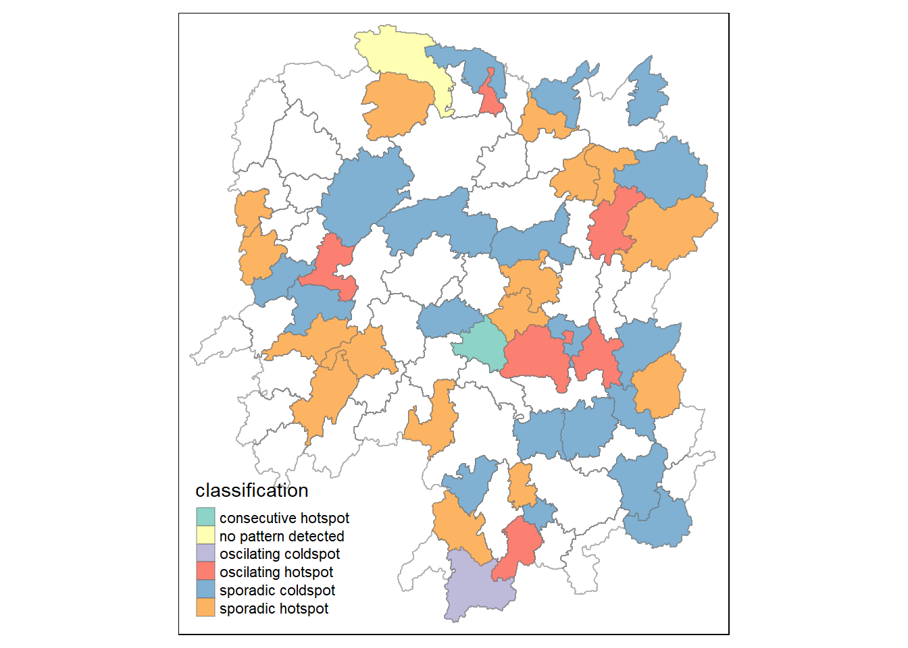

pacman::p_load(sf, tmap, sfdep,tidyverse, knitr,plotly)In_class_2
Getting Started
Import packages
Import attribute files and join
getwd() [1] "C:/kekekay/ISSS624/In-class_2"hunan <- st_read("data/geospatial",layer = "Hunan") Reading layer `Hunan' from data source
`C:\kekekay\ISSS624\In-class_2\data\geospatial' using driver `ESRI Shapefile'
Simple feature collection with 88 features and 7 fields
Geometry type: POLYGON
Dimension: XY
Bounding box: xmin: 108.7831 ymin: 24.6342 xmax: 114.2544 ymax: 30.12812
Geodetic CRS: WGS 84hunan2012 <- read.csv("data/aspatial/Hunan_2012.csv") sfdep - time cube
hunan_GDPPC<- left_join(hunan,hunan2012)%>% select(1:4,7,15)Joining with `by = join_by(County)`1st - spatial layer
2nd - non spatial layer
Deriving contiguity weights: Queen’s method
wm_q <- hunan_GDPPC %>%
mutate(nb = st_contiguity(geometry),
wt = st_weights(nb,
style = "W"),
.before = 1)Global Spatial Autocorrelation
Computing local Moran’s I
use local_moran() of sfdep package to compute local moran’s I of GDPPC at county level
lisa <- wm_q %>%
mutate(local_moran = local_moran(
GDPPC, nb, wt, nsim = 99),
.before = 1) %>%
unnest(local_moran)Time Series Cube
GDPPC <- read_csv("data/aspatial/Hunan_GDPPC.csv")Rows: 1496 Columns: 3
── Column specification ────────────────────────────────────────────────────────
Delimiter: ","
chr (1): County
dbl (2): Year, GDPPC
ℹ Use `spec()` to retrieve the full column specification for this data.
ℹ Specify the column types or set `show_col_types = FALSE` to quiet this message.GDPPC_st <- spacetime(GDPPC, hunan,
.loc_col = "County",
.time_col = "Year")
is_spacetime_cube(GDPPC)[1] FALSEpacman::p_load(zoo,Kendall)is_spacetime_cube(GDPPC_st)[1] TRUEGDPPC_nb <- GDPPC_st %>%
activate("geometry") %>%
mutate(nb =include_self(st_contiguity(geometry)),
wt = st_inverse_distance(nb,geometry,
scale = 1,
alpha=1),
.before = 1) %>%
set_nbs("nb") %>%
set_wts("wt")! Polygon provided. Using point on surface.Warning: There was 1 warning in `stopifnot()`.
ℹ In argument: `wt = st_inverse_distance(nb, geometry, scale = 1, alpha = 1)`.
Caused by warning in `st_point_on_surface.sfc()`:
! st_point_on_surface may not give correct results for longitude/latitude dataComputing GI*
gi_stars <- GDPPC_nb %>%
group_by(Year) %>%
mutate(gi_star = local_gstar_perm(
GDPPC, nb, wt)) %>%
tidyr::unnest(gi_star)Performing Emerging hotspot analysis
Visualising the distribution of EHSA classes
#install.packages("Kendall", repos = "https://cloud.r-project.org")
library(Kendall)ehsa <- emerging_hotspot_analysis(
x = GDPPC_st,
.var = "GDPPC",
k = 1,
nsim = 99
)
hunan_ehsa <- hunan %>%
left_join(ehsa,
by = join_by(County==location))ehsa_sig <- hunan_ehsa %>%
filter(p_value < 0.05)
tmap_mode("plot")tmap mode set to plottingtm_shape(hunan_ehsa) +
tm_polygons +
tm_borders(alpha = 0.5) +
tm_shape(ehsa_sig) +
tm_fill("classification") +
tm_borders(alpha = 0.4)